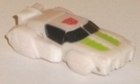
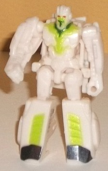
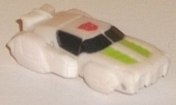
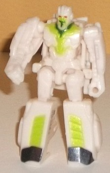
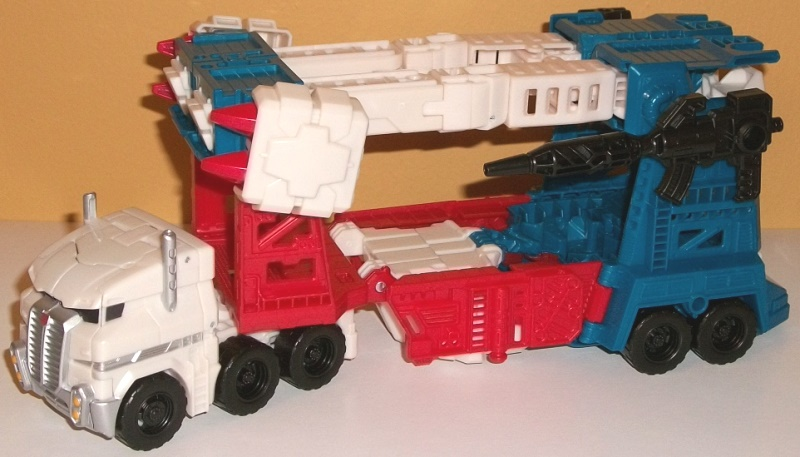
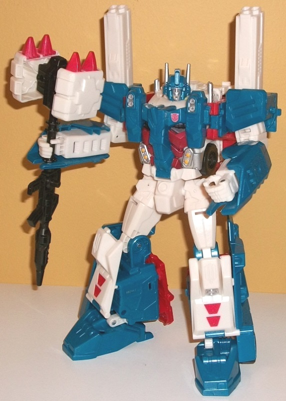

 
Size : Roughly a small Minicon
Difficulty of Transformation : Easy
Color Scheme : Pearly off-white and some black, light metallic green, dark metallic green, and red
Individual Rating : 6.6
Allegiances
: Autobot
 Minimus
Ambus
Minimus
Ambus


Size
: Roughly a small Minicon
Difficulty of Transformation
: Easy
Color Scheme
: Pearly off-white and
some black, light metallic green, dark metallic green, and red
Individual Rating
: 6.6
Did you know that according
to the current IDW comic continuity, Ultra Magnus isn't a white Prime in
a suit, but rather, a mostly-white completely different tiny character
in a relatively much bigger suit? Well, now you do, and his name is Minimus
Ambus. The toy for him is darn small, being about the size of the tiniest
Minicons from
Armada
. His vehicle mode is a
hovercar-- basically he looks like a car with an overly small spoiler in
the back and no actual wheels, but little protrusions where you think wheels
would be. Especially for such a tiny toy, he looks pretty good in this
mode, with the robot hands on the sides not being nearly as obvious as
you'd think. On the back end there is a gap where you can see his robot
head, but again-- he's TINY. You can only expect so much. He's mostly off-white
in this mode, though his windows are painted black, providing for some
contrast. Two stripes down his front hood are painted light green-- comic-accurate,
but not a great color against off-white, I must say. They're both too light
and just don't go together all that well. Beyond these bits and the spoiler,
Minimus Ambus' mold detailing is very simplstic in this mode-- nearly non-existent,
unfortunately.
Ambus' robot mode transformation
is very simple-- just fold out the legs from the front, unpeg the arms
from the sides, and then lower the hood/spoiler portion on the back of
his body. The problem is-- and why I rated his transformation as "Easy"
as opposed to "Very Easy"-- is that it takes more force than you'd think
to move down the back panel, and his knees also take considerably more
force to move than the ball joints on his shoulders and hips. (His overall
articulation is at the shoulders, hips, and back-and-forth at the knees
in this mode-- pretty good for such a small toy.) Because of this, his
legs and/or arms are nearly guaranteed to come off as you try to finangle
that little back piece down into its proper place during transformation.
Annoying, but still, they pop right back on. In robot mode, Minimus Ambus
still looks pretty good, with largely spot-on proportions. The vehicle
bit on his back fits in with the overall shape of his body quite well,
and doesn't come across as a piece of kibble. The mold detailing on Ambus'
main body and arms is much more intricate in this mode, with several details
made to make him fit in with how he looks in the IDW comics (given the
design, I assume he originally wasn't designed to made into a toy, so...
good work, Hasbro!). There's also a bit more light green detailing on the
chest, which this time goes well with the dark green detailing on his collar
and mustache, and his teeny eyes are even painted red. I would've preferred
some paint on his arms and/or waist, but still, he does definitely look
better in robot mode.
 Ultra
Magnus
Ultra
Magnus


Size
: Leader
Difficulty of Transformation
: Hard
Color Scheme
: Pearly off-white,
moderately dark milky blue, milky red, and some black, silver, and dull
orangish yellow
Individual Rating
: 9.4
Ultra Magnus' vehicle
mode is a rather futuristic car transport, and looks like a slightly-more-futuristic
version of his
G1 alt mode
, with the truck
cab in particular being stylized. The truck cab looks less realistic than
usual, with no visible side doors, angular and smaller-than-you'd-expect
windows, angled headlights, and a much larger grill than you'd think. It
does make for a nice little truck cab, though, and can turn at the point
where it meets the trailer, though the cab can't come apart from the figure
without a little unscrewing, which I don't recommend. Magnus' trailer takes
its design cues very much from G1, complete with the "constuction girder"-like
design in the front, the missile pods on the sides (though this version
of Magnus' pods are bulkier and have pointier missiles than typical), rather
skinny dual white parts of his arms forming most of the second "floor"
of the trailer, a first "floor" made mostly of various robot parts tucked
away somewhat inconspiciously with some color oddities, and a back end
that is very obviously Ultra Magnus' lower legs, complete with a lowering
ramp made out of the central white portions of said lower legs. Despite
all his connecting and fold-out pieces and ramps, CW Magnus fits together
REMARKABLY solidly in this mode, with every panel having a tab and hole
that fits together nice and tightly, so no issues there. Beyond his feet,
most of Magnus' robot parts are hidden at least competently-- the hands
are mostly hidden by the blue parts around them at the rear of the trailer,
and the chest piece folds into the bottom of the first "floor"; the downside
to this is that the backside of this chest piece is hollow, which means
that Magnus' first "floor" is not smooth at all. The top of the waist piece
and the front part of the first "floor" are pretty solid, though, with
only a minor gap, and the waist and upper leg robot mode detailing are
hidden on the sides by fold-out red detail panels. Honestly, the mold detailing
on Magnus can be rather schizophrenic, being bare-minimum in some spots
like the front red portions and most of the front part of the second "floor"
of the trailer, with large portions of the cab also being smooth. Other
parts are VERY detailed in terms of the mold, with ladders and girder-like
details everywhere along the sides of the trailer, small mechanical details
along a line that draws across the center of the cab, and even a ladder
on each side of said cab. Unfortunately, much of this mold detailing isn't
pointed out at all in this mode, with the trailer having very few paint
apps- pretty much just the missile launchers and the white parts on the
back end, really. The cab, however, is adequately detailed in terms of
paint, with black windows, several silver details on the sides and front
including the grill, and even little yellow headlights. As such, Magnus
definitely looks a bit plain, despite the fact that his colors are-- for
the most part-- broken up fairly well in this mode. However, given that
red, white, and dark blue (and a bit of black) are literally all of his
plastic colors, this still makes him look like a bit unfinished. Another
downside with this mode is that Ultra Magnus is a bit too small proportionally
when compared to the Combiner Wars car deluxes that he's supposed to be
carrying; he can just BARELY fit one on each "floor" of his trailer, and
it can be touch getting one in on the bottom "floor" if you don't remove
all its accessories. Given that a car carrier's made to carry at least
2 on each level, this is a bit disappointing, although short of making
Magnus an oversized Titan-class toy I can't really see how Hasbro could've
gotten around this, size category budgets what they are. Magnus comes with
two (non-firing) gun accessories, both of which can store in two of four
different holes for them on the side rear portions of the vehicle. Unfortunately
Minimus Ambus doesn't store or "peg in" anywhere in this mode-- a bit of
an oversight, there.
Ultra Magnus' transformation
to robot mode follows the same basic steps of his G1 toy, but with a lot
more going on in the legs to make them solid yet articulated-- I love the
way the side girders fold behind the lower legs, in particular. The cab
also doesn't detach, but the front section actually rotates completely
around and them folds down to form the "core" of Magnus' chest, with a
fake chest panel closing the whole thing up. Minimus Ambus fits inside
the opened-up "cockpit" inside the chest, though it is a tight fit-- and
the Magnus head fits right over Ambus' little head, which is a nice touch.
That said, if you don't like the idea of Minimus Ambus, this robot mode
doesn't look like it's missing anything without him in there-- Magnus'
head and chest still look complete and solid without Ambus. Generally,
this robot mode calls back to the IDW version of the character a little
more than than the traditional G1 take, with large, fairly cartoony-looking
boots (given the relative lack of mold detailing) more angular shoulder
and shoulder spires, and a VERY IDW-looking chest, with things looking
more angular and "complex" in the mold detailing there, even though (with
the exception of the headlights on the abdomen) it's a completely faux
chest piece. The head has the G1-style large optics, in a departure from
the rest of the figure. All in all, Magnus' proportions are pretty solid,
and the one part that's off (the overly-large feet and lower legs) are
almost certainly that way on purpose because of the IDW stylization. The
mold detailing is still great on the head and chest, though, with it looking
like most of the paint budget went to those parts and the truck cab-- again,
this makes the center look great, but the rest of the figure looks a bit
unfinished as a result, even if the colors are mostly broken up alright
(with the exception of too much white on the legs). I am also not a fan
of the white showing up in the inside center of the lower arms, as that's
traditionally been covered up and breaks up the whole "blue lower arms"
look G1-esque Magnus toys have always had. For a figure that otherwise
locks together very solidly, I'm also disappointed that his lower leg "flaps"
have trouble tabbing in well, with the front and sides of his lower legs
in general being able to move around a bit without really feeling "locked
in place" anywhere. For articulation, Ultra Magnus can move side-to-side
at the neck, as well as movement at the shoulders (at two points), elbows
(at two points), four fingers on each hand (all as one piece), and at the
hips (at three points), knees, and ankles (at two points). This gives him
a pretty good range of motion, though I'm not sure why waist articulation
wasn't included (there's no reason why due to the transformation). With
his feet in their folded-forward position as in the instructions, he can
fall over on his back a little easy, as well, because he's a bit back-heavy
due to part of the cab mass back there; I recommend keeping his feet back
a bit more than in the instructions because of this. Magnus' two guns can
be held in each hand (slightly loosely, given the lack of solid tab or
peg for them to slot into) or stored on the side of his lower legs here,
while his missile pods are stored on the sides of his shoulders in this
mode, as is typical for Ultra Magnus-- OR in a really neat touch, you can
connect all four weapons together to form an
Animated-inspired
warhammer for Magnus! Unfortunately, he can only hold it at one spot, and
the bottom part of the shaft definitely looks a lot like a gun stuck on
the bottom, but it's more of a bonus than full-on feature, so I appreciate
it quite a bit.
Combiner Wars Ultra Magnus is a neat, slightly different take on the Autobot commander, what with a cab that doesn't separate and a little tiny pilot that fits inside his chest. With a few minor exceptions, both of his components look good in both of their modes, and I do like the more stylized version of the robot mode more than his "stiffer-looking" G1 design. His weapons combining to form a warhammer is also a super-cool homage. That said, he is a bit undersized for carrying CW deluxes, and definitely suffers from a dearth of paint detailing-- plus I'm not a fan of how the lower "floor" in his trailer in vehicle mode is not level. Still, altogether he's a solid recommendation, and my favorite leader class toy from the Combiner Wars line.
Reviews by Beastbot